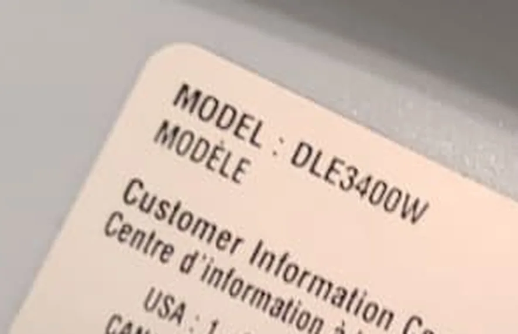
A homeowner in Fishers, Indiana contacted Alex Appliance Repair about an LG DLE3400W electric dryer that was overheating. This laundry setup placed the dryer above an LG front-load washer, so safe access required removing the dryer from the stacked installation before diagnosis.
Inspection found two connected problems: the blower housing thermostat had failed, and the exhaust transition duct behind the stacked appliances was crushed and restricting airflow. The completed repair combined thermostat replacement with internal cleaning and correction of the exhaust connection.
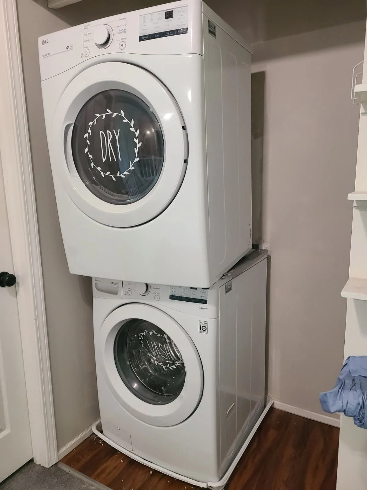
The Dryer Before and After Service
The finished installation shows the DLE3400W back above its matching washer. Reaching that result required servicing the dryer itself and rebuilding the restricted transition between the appliance and the wall exhaust.
The photographs below follow the work in order: access, diagnosis, internal cleaning, thermostat replacement, exhaust correction, reassembly and operating checks.
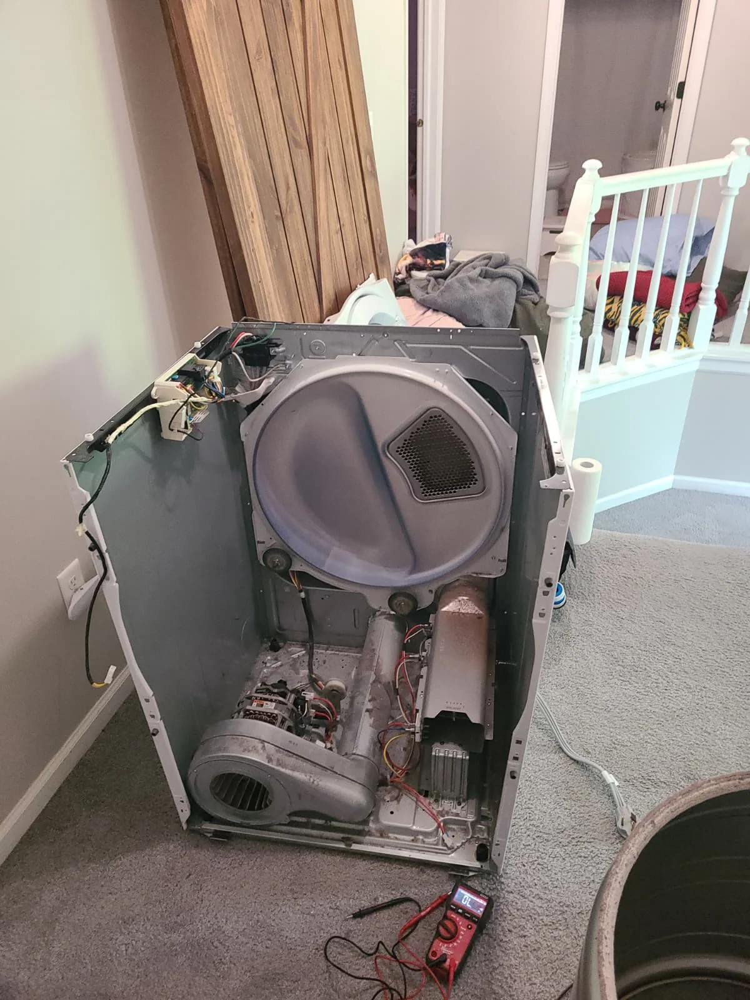
Accessing the Stacked LG Dryer
We disconnected the dryer and carefully removed it from the washer so the cabinet and rear exhaust connection could be reached. Once the unit was in a safe service position, we opened the cabinet and removed the drum for access to the blower, exhaust path and heating system.
A stacked installation can hide the condition of the transition duct. Moving the dryer exposed the space behind the appliances and made it possible to inspect the complete connection instead of treating the failed component in isolation.
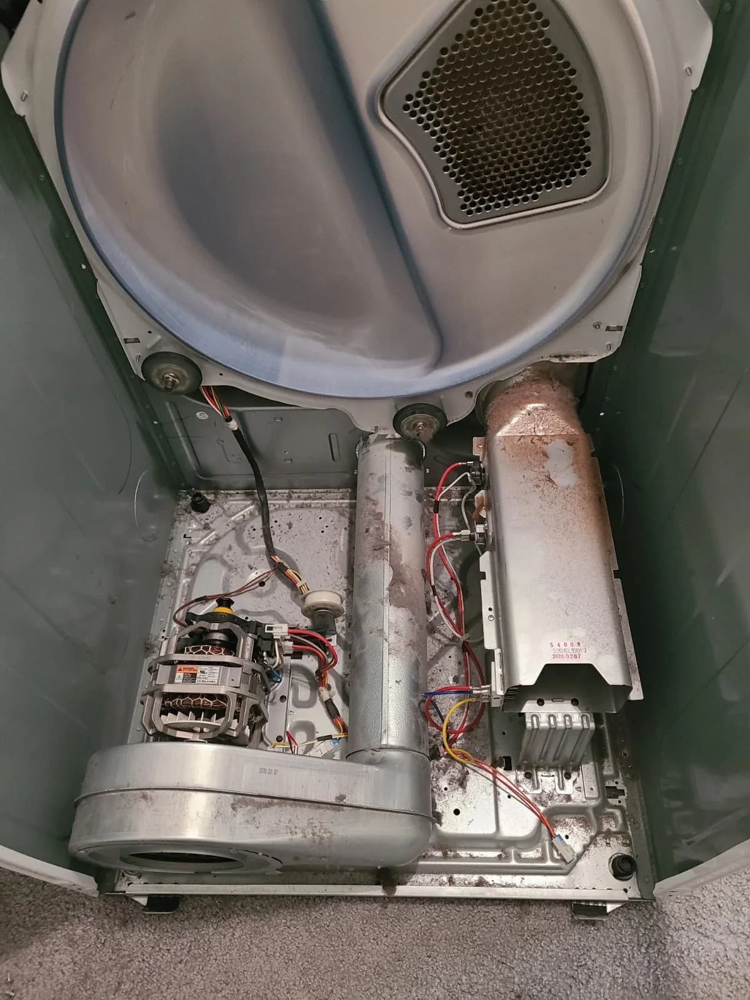
Inspecting the Airflow and Heating System
With the dryer open, we inspected the wiring, heater area, blower housing and accessible exhaust passages. Lint and debris had accumulated inside the cabinet and around the airflow path. The service photos document the condition before cleaning and the access required for testing.
Electrical testing identified the failed component as the blower housing thermostat. For model DLE3400W, the replacement used on this repair was LG part 6931EL3002M, shown as position K560 in the model parts diagram.
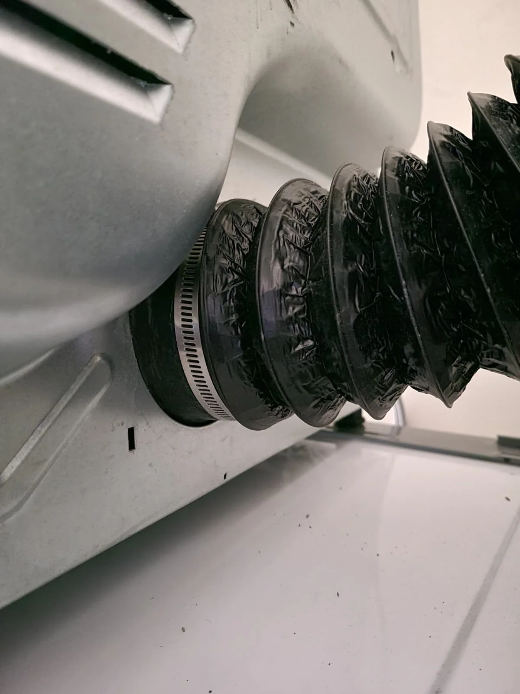
Finding the Underlying Airflow Restriction
The exhaust opening showed a heavy layer of lint, but the larger restriction was behind the stacked laundry pair. The flexible transition duct had been compressed and deformed, reducing the path available for hot, moist air to leave the dryer.
That restriction increased resistance through the exhaust system and allowed more heat to remain around the blower and exhaust components. In this service visit, the restricted duct and failed blower thermostat needed to be addressed together. A similar dryer symptom can have a different cause, so the airflow path and electrical components should be checked before selecting a part.
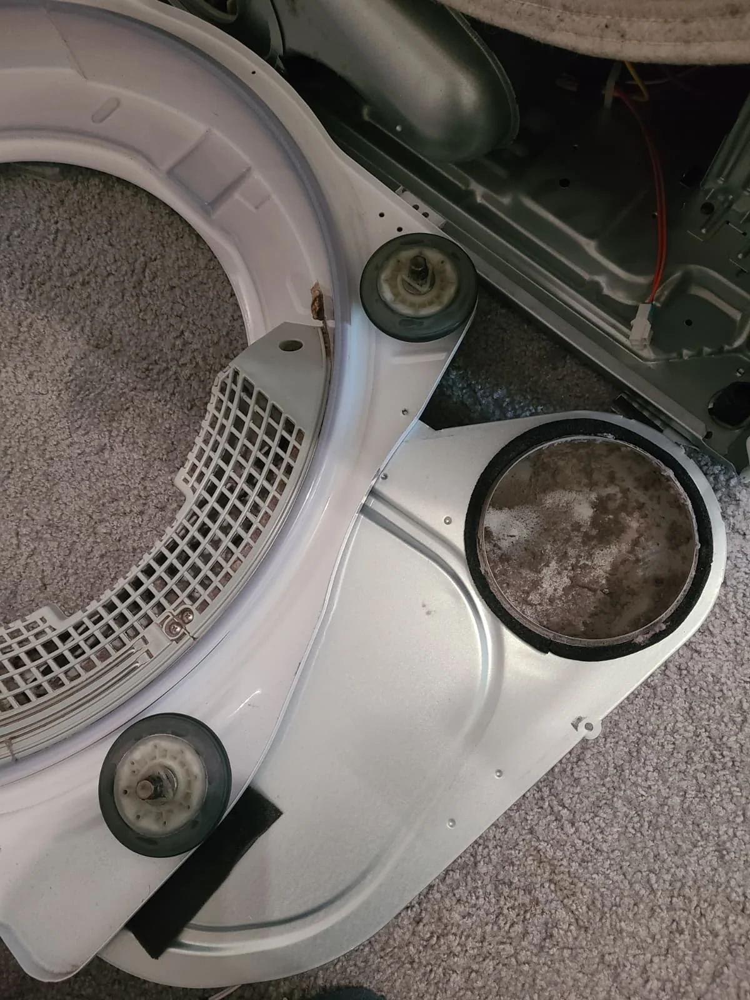
Blower Housing Diagnosis
Opening the blower area let us inspect the exhaust side of the dryer where the thermostat is mounted. The condition in this area supported cleaning the airflow path while the failed thermostat was accessible.
The diagnosis distinguished the blower thermostat from the nearby thermistor and from the separate thermal fuse. That distinction matters because the parts have different functions and are not interchangeable.
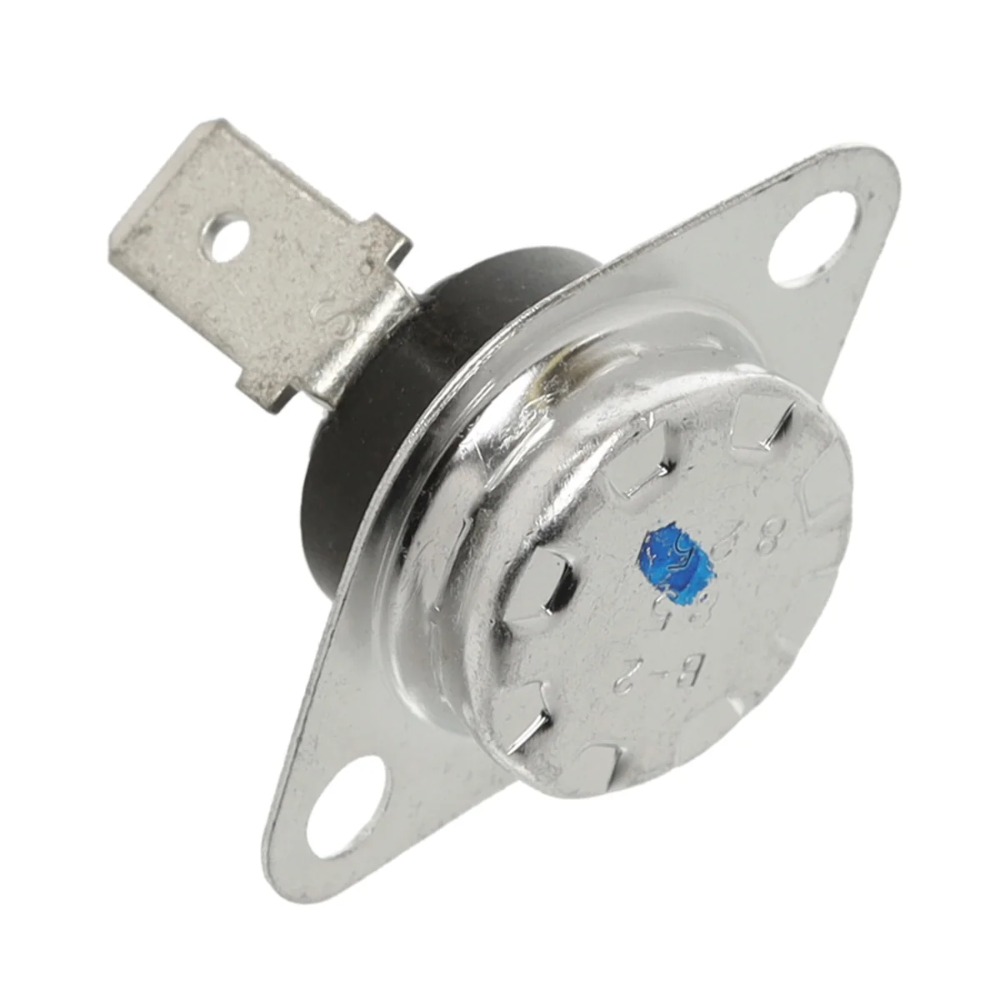
Why Dryer Airflow Matters
A dryer needs heat and continuous airflow. The blower moves heated air through the drum and sends moisture through the exhaust duct. When the duct is crushed or obstructed, that air cannot leave at the intended rate and heat can build up in the exhaust system.
Prolonged overheating can affect thermal safety components. The LG 6931EL3002M blower thermostat used here is a different component from the dryer thermistor and the separate thermal fuse. Replacing the thermostat without correcting the restriction could leave the condition that contributed to the failure.
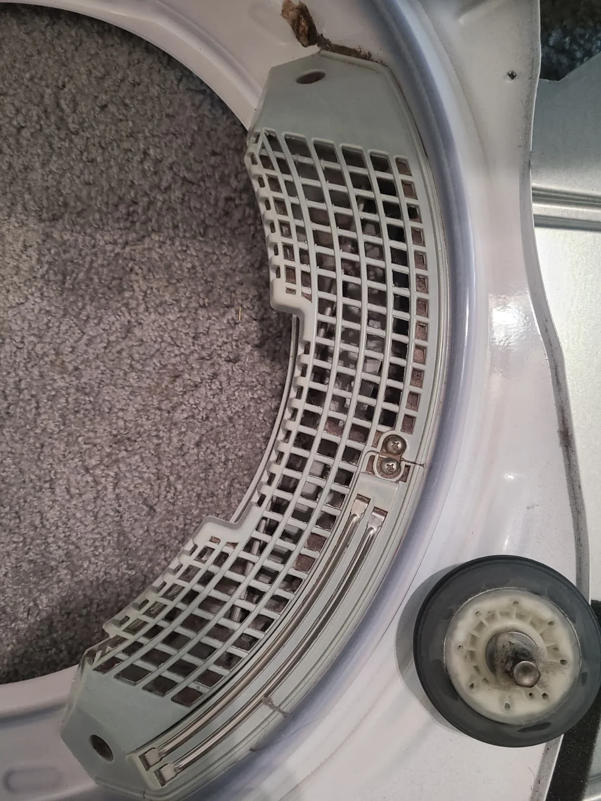
Cleaning the Blower and Airflow Path
We vacuumed lint and debris from the cabinet, cleaned the blower and cleared the accessible internal airflow surfaces. The blower inlet and surrounding housing were left clean before the dryer was reassembled.
Removing loose lint also made it possible to inspect the surfaces and connections that had been hidden by debris.
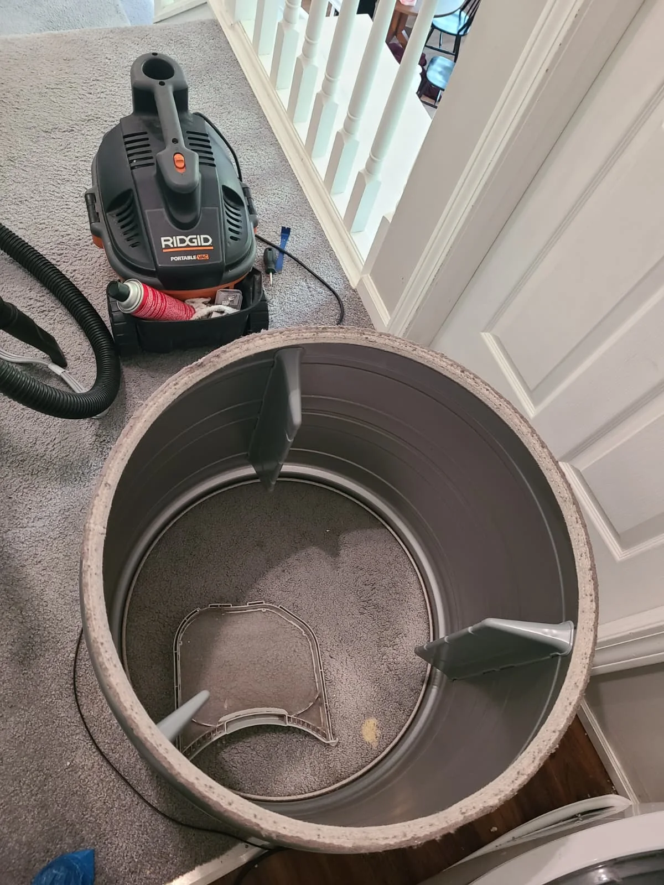
Replacing the Blower Thermostat
With the drum out and the service area clean, the failed blower thermostat was removed and replaced with LG part 6931EL3002M. We reconnected its wiring and checked the serviced area before returning the drum and cabinet components to their working positions.
The internal cleaning and thermostat replacement addressed the dryer-side conditions. The external exhaust restriction still had to be corrected before the unit could be returned to service.
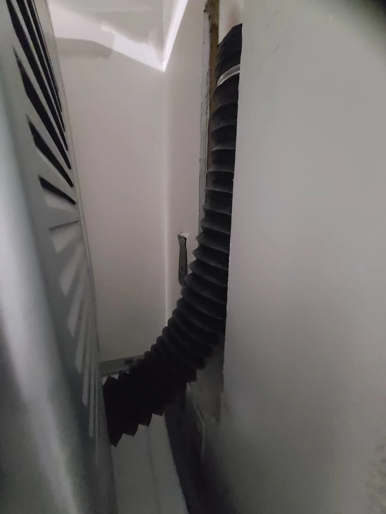
Correcting the Crushed Exhaust Duct
The damaged transition duct was removed so it would not continue to restrict the repaired dryer. We installed a new flexible metal dryer exhaust duct and routed it to avoid the sharp compression visible in the original installation.
The connection was secured with metal worm-drive clamps. This gave the dryer a clear transition from its exhaust outlet to the wall connection while still allowing the stacked unit to be returned to position.
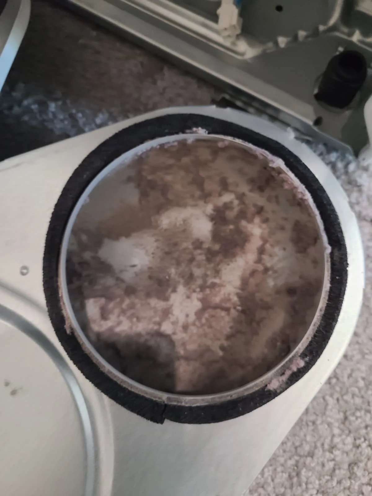
Restoring the Exhaust Route
Removing the dryer exposed the full route to the wall connection. That access allowed the transition duct to be positioned without the tight bend that had reduced airflow behind the stacked pair.
Before returning the dryer to the washer, we checked the new route and both connections so the duct would remain open when the appliances were moved back into place.
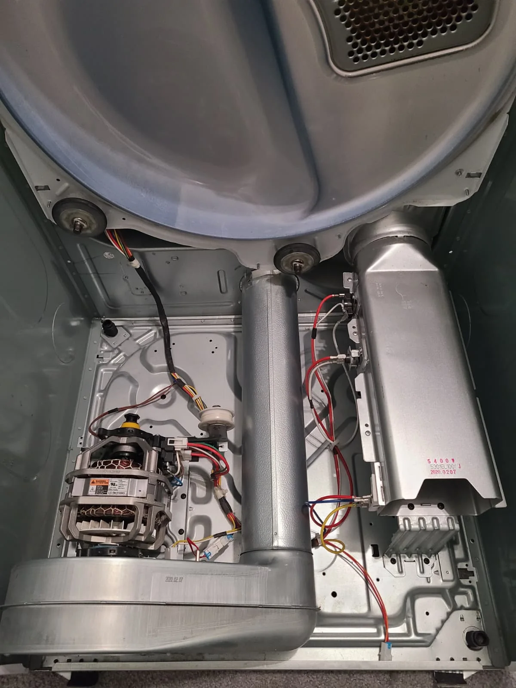
Reassembly and Post-Repair Testing
After cleaning and component replacement, we reassembled the LG dryer, returned it to the stacked position and connected the corrected exhaust duct. We then tested heating and airflow with the dryer operating.
Normal heating and exhaust airflow were restored. The unit operated normally after the repair. This final check confirmed the immediate result of the thermostat replacement, cleaning and duct correction performed during this visit.
LG Dryer Repair in Fishers, Indiana
This LG DLE3400W repair shows why an overheating or no-run complaint can require both component testing and an inspection of the exhaust path. Alex Appliance Repair provides dryer diagnosis and repair in Fishers and nearby communities.
For help with a dryer that overheats, takes too long to dry or has weak exhaust airflow, visit our dryer repair service in Fishers page or review our Fishers service coverage. Share the model number, symptoms and whether the dryer is stacked when booking.
Need Dryer Repair in Fishers?
Schedule a diagnosis if your dryer is overheating, shutting down, taking longer than usual or showing an airflow warning. We inspect the appliance and explain the proposed repair before approved work begins.
Book dryer service
{kind=link}
{kind=link}
{kind=link}
{kind=link}
{kind=link}
{kind=link}
{kind=link}
{kind=link}
{kind=link}
{kind=link}
{kind=link}
{kind=link}